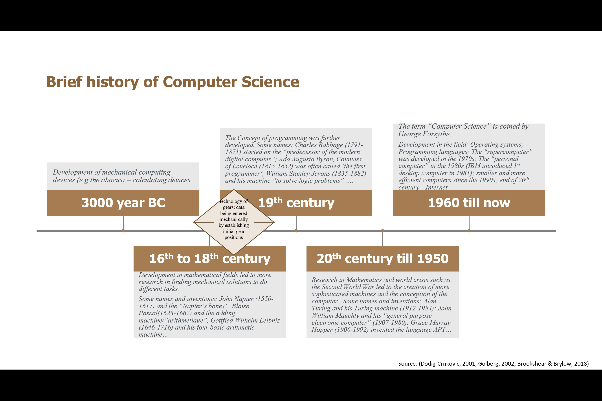
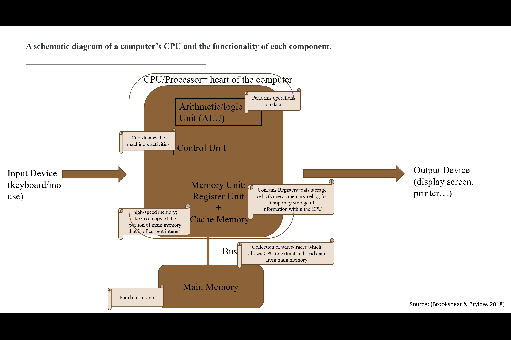
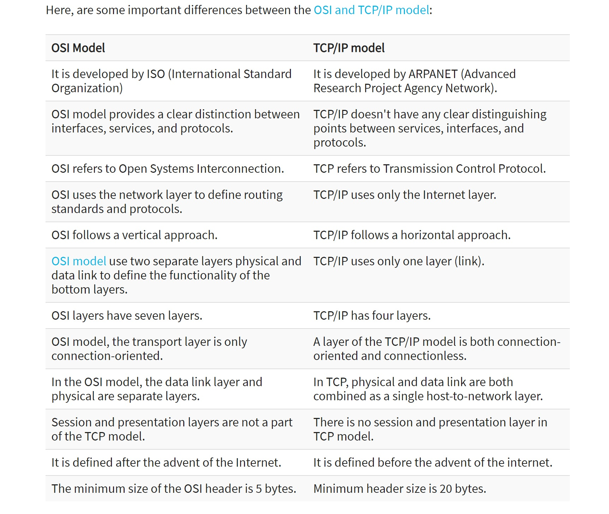
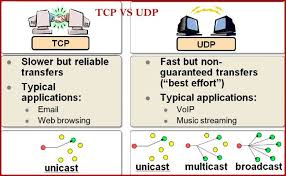
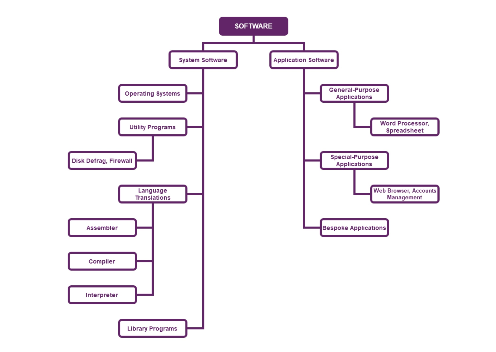

Module1: Launching into Computer Science

Learning Outcomes
"On completion of this module, students will be able to:
big data, cybersecurity, and the professional and ethical requirements for dealing with such contemporary computer-based technologies."
Overview of the first two units
Unit 1: Computing as a Profession – Responsibilities and ChallengesUnit 2: Introduction to Computer Architecture and the Functionality
In the first two units of this module, I have been able to:

Exercise 1: Schematic Diagram of the CPU
Exercise 2: Differences between Register and Memory
While both "memory" and "registers" increase the processor’s working speed, there are a few differences between them, as shown in the table below:
| Register | Memory Cell |
|---|---|
| Register=memory, but not part of main memory | primary memory of the computer |
| contains data storage cells (similar to main memory cells), called registers, that are used for temporary storage of information within the CPU/Registers hold the operands or instruction that CPU is currently processing. | Fetching of data from memory takes more time as compared to registers |
| Register holds the small amount of data around 32-bits to 64-bits | Memory of the computer can range from some GB to TB |
| Inside the CPU | Outside the CPU, but closer to it |
Exercise 3: Types of Computers

Exercise 4: Reflecting upon my career path in CS
Unit 3: Emerging Trends in Computer Science
Reflective Session:
Who doesn’t know Google? In fact, Google has gone beyond the search engine idea, generated by the co-founders in 1995 (Google About).
It is in continuous development and offers various services such as YouTube, Gmail, Google Translate and has recently come up with Google AI…
I use Google Translate a lot. It is quite accurate (except when translating a few idioms or proverbs), and much better that it was 10 years ago.
This was made possible by the machine learning technology such as the Neural Machine Translation and other technologies used by Google (Sagar, 2020).
Artificial intelligence (AI) and machine learning seem to become part of our everyday life.
Google has made available the Google AI platform, a space where both novices and experts can play with AI for free or for a small sum.
By clicking on the “Building Blocks of Google”, a panoply of services is made available. Some of these services are (Stiles, 2019):
All these seem quite exciting and have brought lots of advances in research.
However, we come back to the original question raised in the first two units – that of ethics.
Quoting Solomon and Hanson (1985), Herschel & Andrews (1997: 162) posit that “ethics is a way of life”, where people understand that they form part of a “social order”,
and that as part of a community, they have to take into consideration the interests of everyone around them.
In 2020 and 2021, Google fired some of its ethics researchers, “who happened to be examining the downsides of technology integral to Google’s search products” (Vincent, 2021).
This has created quite a lot of criticism, and questions were raised about the censorship behind published work by Google,
the “legal risks associated with new research — including risks to users’ personal data” and whether “Google can be trusted to honestly question the ethical applications of its technology”.
References
Google. (n.d) From the garage to the Googleplex. Google-About. [Accessed 17 May 2021]
Herschel, R. T. and Andrews, P. H. (1997) Ethical Implications of Technological Advances on Business Communication. The Journal of Business Communication 34(2): 160-170.
Sagar, R. (June 14, 2020) Machine Learning behind Google Translate. Link to Sagar [Accessed 17 May 2021]
Stiles, B. (August 24, 2019) Beginner's Intro to Google Cloud AI (2020). Link to Stiles[Accessed 17 May 2021]
Vincent, J. (April 13, 2021), The firing of top Google AI ethics researchers has created a significant backlash. Link to Vincent [Accessed 17 May 2021]
Wiggers, K. (June 3, 2020) How Google is using emerging AI techniques to improve language translation quality. Venture Beat: The Machine AI. Link to Wiggers [Accessed 17 May 2021]
Unit 4: Computing Infrastructure and Network
Some exercises
1. A schematic diagram of the OSI model with the functionalities of each layer:

Source: Google Images
2. Schematic Diagram of the TCP/IP protocol:

Source: Google Images
3. Client-Server Model vs Peer-to-Peer (P2P) Model:

Source: Google Images
4. Transmission Control Protocol (TCP) vs User Datagram Protocol (UDP)

Source: Google Images
5. Identify the components of the following URL and describe the meaning of each:
http://lifeforms.com/animals/moviestars/kermit.html
http:hypertext transfer protocol to access the document
lifeforms.com:host holding the doc
animals/moviestars:directory path indicating the location of the document within the host file system
kermit.html:document name
6. Summary and Reflective section
It might seem simple for us to switch on our phones or computer to send emails, download music or surf the internet. However, if we look behind the scene,
we will come across quite an intricate computer system or architecture. Indeed, without a well-thought and organised computing architecture (peer-to-peer (P2P)
or client-server (CS) architecture), sending and receiving data from one device to another is impossible and new technologies such as virtual environments, cloud computing,
big data and mobile computing cannot be carried out. Both of these architectures (P2P and CS) have financial, implementation or security constraints and advantages,
which play a role in the final decision-making on which architecture is to be implemented.
Furthermore, a computer network is quite complex and has many components (hub, switch, router, …), connected with each other through a transmission medium
such as cable, wire etc. It is the combination of all these components that are inter-connected which make the network function. There are mainly three types of computer networks:
In order to make it possible to transmit and access data, protocols had to be made (known as IP or Internet Protocols). The most important computer network models/protocols are:
1. OSI Model
2. TCP/IP Model
One recurrent issue raised when we talk about computer infrastructure and network is undeniably that of security and threats, discussed in the first three units/lectures.
References
Brookshear, J. and Brylow, D. (2018) Computer Science - An Overview. 13th ed. Harlow: Pearson.
Singh, C. (n.d), “Computer Network Architecture”, Beginners Books. Available from : Link to Singh [Accessed on 22 May 2021]
Sotiriadis, S. (2021). Unit 4: Computing Infrastructure and Network, Lecture Notes, Launching into Computer Science LCS_PCOM7E, University of Essex Online, delivered May 2021.
Unit 5
What have I learnt in this unit?
Computers will not be able to do anything, if they do not receive any instructions, and these instructions come in the form of a program.
Software can, therefore, be defined as "a group of programs that perform a specific task."
The diagram below shows a software classification based on the tasks it performs (Rama, 2013):

Source: Sotiriadis, S. (2021). Unit 5: Software as a Tool - Its Functionality and Development Methodologies, Lecture Notes, Launching into Computer Science LCS_PCOM7E, University of Essex Online, delivered June 2021.